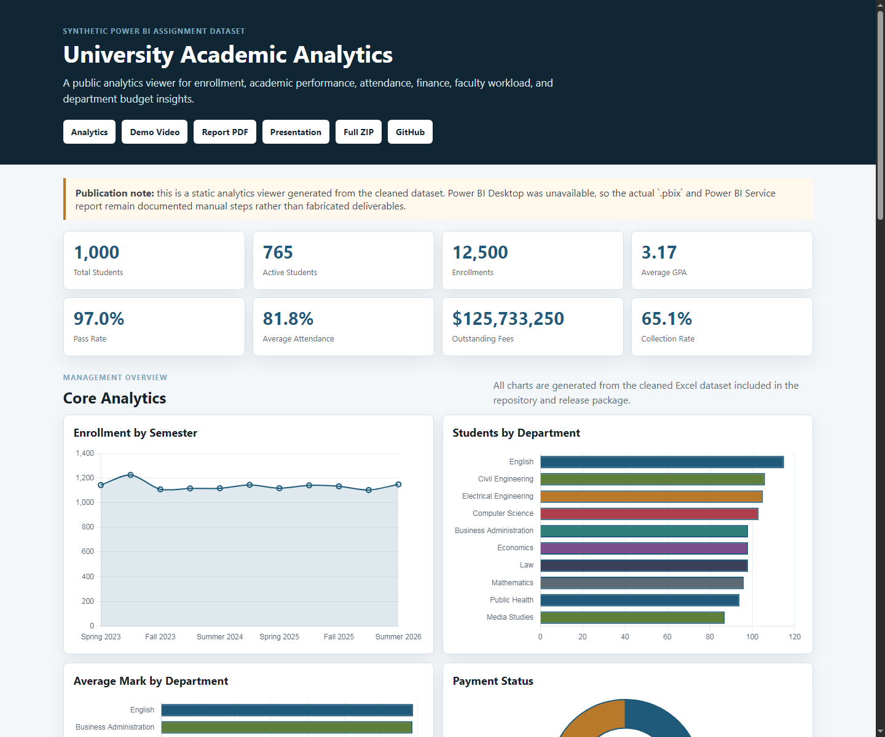
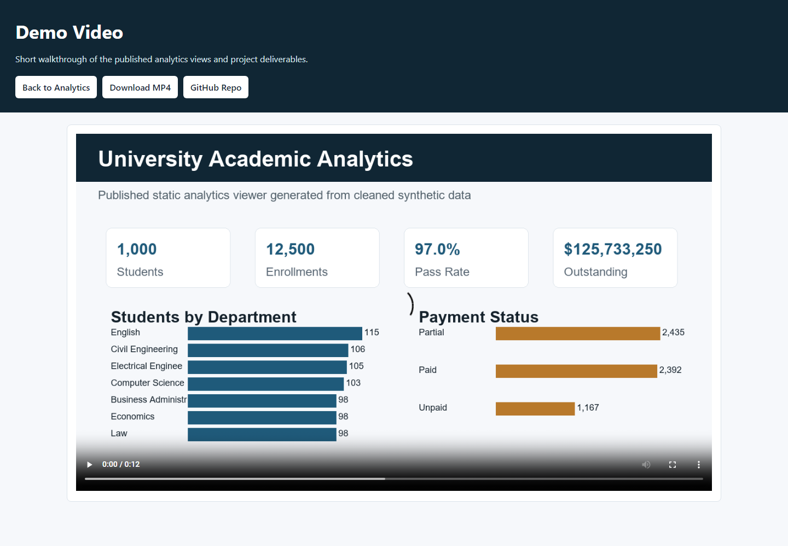

Management Overview
Core Analytics
All charts are generated from the cleaned Excel dataset included in the repository and release package.
Students by Department
Average Mark by Department
Payment Status
Outstanding Fees by Department
Grade Distribution
Attendance by Department
Top Course Failure Rates
Budget Utilization
Main Analytical Findings
Published Evidence

